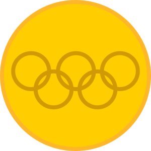
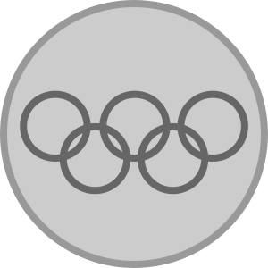

Ídolos e Recordes do Vôlei
O vôlei é cheio de recordes impressionantes e ídolos que inspiram novos jogadores. Um dos maiores ídolos é Giba, conhecido por sua habilidade incrível e conquistas com a seleção brasileira. Ele é um dos jogadores com mais títulos internacionais, incluindo medalhas de ouro olímpicas e campeonatos mundiais.
| Campeonatos |  |  | ||
|---|---|---|---|---|
| Olímpiadas | 1 | 2 | 0 | 3 |
| Mundial | 3 | 0 | 0 | 3 |
| VNL | 8 | 3 | 2 | 13 |
| Sul-Americano | 8 | 0 | 0 | 8 |
Entre os recordes notáveis, o Brasil detém o recorde de maior número de títulos na Liga Mundial de Vôlei, um feito que destaca a excelência do vôlei brasileiro em nível internacional.
| Ordem | Países | ||||
|---|---|---|---|---|---|
| 1º | Brasil | 9 | 7 | 4 | 20 |
| 2º | Itália | 8 | 3 | 4 | 15 |
| 3º | Rússia | 3 | 5 | 7 | 15 |